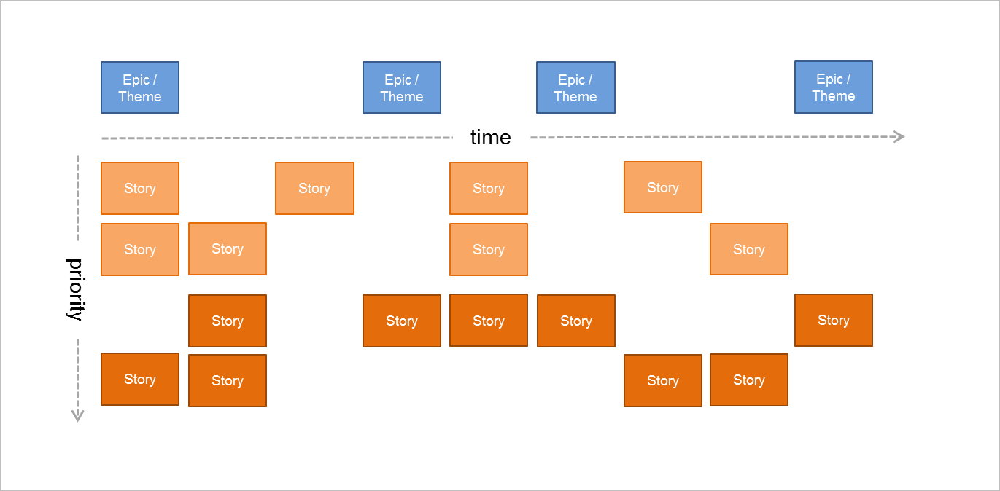
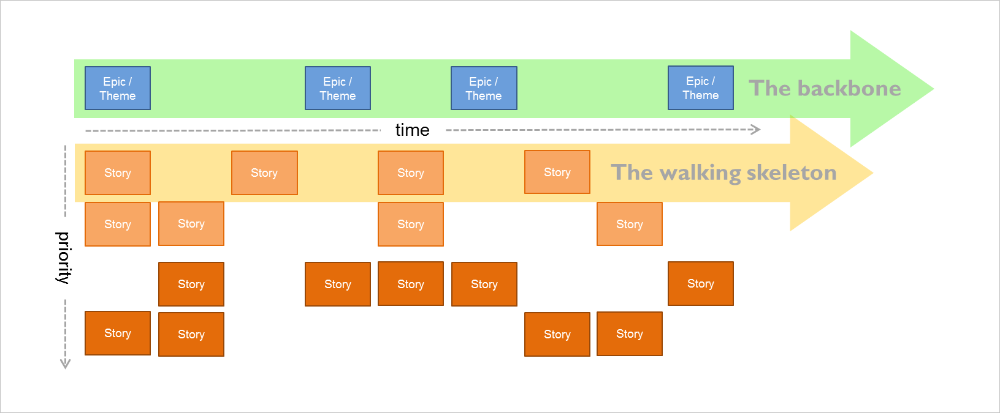

Story Mapping
ConAgileStoryMap Story Mapping
Amendments History
| Date | Ver. | Inc. | Author | Amendment | Status |
|---|---|---|---|---|---|
| January 2017 | 0 | 1 | Kevin John | Topic created to migrate Rapid content | Draft |
Story Mapping is an Agile planning technique. A Story Map is a graphical, two-dimensional visualization of the Product Backlog.
Horizontally along the top of the Story Map are the headings under which backlog items are grouped, usually referred to as
'Epic Stories' (big coarse-grained User Stories) or 'Themes' (collections of related backlog items). These are identified
by orienting the user’s workflow or ‘the order you'd explain the behaviour of the system’.
agile story map
A basic Agile Story Map
Vertically, below the Epic Stories, the backlog items are allocated and ordered by priority. The top horizontal row represents
the “backbone” of the system; the essential capabilities the system needs to have. The first horizontal row of backlog items
below the backbone is a "walking skeleton" which is items to be delivered to for a minimum viable product. Backlog items underneath
this represent decreasing priority as per the MoSCoW prioritisation approach.
story map backbone and walking skeleton
The top line is the ‘backbone’ whilst the lines below are the ‘walking skeleton’
The Story Map allows Agile Project Teams to:
| • | What we have done, |
| • | What we are doing, |
| • | What we are going to do. |
Colour can be a useful tool in adding depth to a Story Map:
| • | Show status (to be developed, in development, developed), |
| • | Convey estimation (or if they are not estimated yet), |
| • | Identify complexity, |
| • | Split between technical and business, |
| • | Identify new functionality added in a second instance. |
Once the initial horizontal and vertical grid has been developed the Story Map can optionally be 'sliced' to allow for grouping
and prioritising.
a more complete story map

A more complete map showing further groupings and prioritisation